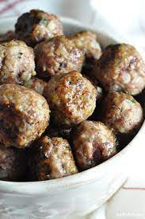

Meatballs

Whether you're making them as an appetizers or to put into a meal, these versatile meatballs will meet all your needs.
They can be frozen for later use too!
Ingredients
- 1 pound ground beef
- 1 pound italian sausage
- 2 eggs
- 2 cloves of garlic minced
- 2 cups italian breadcrumbs
- salt and pepper to taste
- 1 cup romano or parmesan cheese
- 1 1/2 tablespoons parsley
- 1 1/2 cups of lukewarm water
Steps
- Preheat oven to 350°. Line a baking sheet with parchment paper.
- Combine beef and italian sausage in large bowl. Add eggs, cheese, garlic, parsley, salt and pepper.
- Blend bread crumbs into meat mixture. Slowly add the water 1/2 cup at a time. Mixture should be very
moist but still hold its shape if rolled into meatballs.It is okay to have leftover water. Shape into meatballs.
- Bake in oven for 35 minutes. Serve as is or pair with your favorite sauce!